Developing and managing an application in OpenShift
In this lab we will explore some of the common activities undertaken by developers working in OpenShift. You will become familiar with how to use environment variables, secrets, build configurations, and more. Let's look at some of the basic things a developer might care about for a deployed app.
Setup
From the previous lab you should have the DC Metro Maps web app running in OpenShift.
Only if you don't already have it running, add it with the following steps.
Goto the terminal and type these commands:
$ oc new-app --name=dc-metro-map https://github.com/RedHatGov/openshift-workshops.git --context-dir=dc-metro-map
$ oc expose service dc-metro-map
See the app in action and inspect some details
There is no more ambiguity or confusion about where the app came from. OpenShift provides traceability for your running deployment back to the docker image and the registry it came from, as well as (for images built by OpenShift) back to the exact source code branch and commit. Let's take a look at that.
Goto the terminal and type the following:
$ oc status
This is going to show the status of your current project. In this case it will show the dc-metro-map service (svc) with a nested deployment config (dc) along with some more info that you can ignore for now.
A deployment in OpenShift is a replication controller based on a user defined template called a deployment configuration
The dc provides us details we care about to see where our application image comes from, so let's check it out in more detail.
Type the following to find out more about our dc:
$ oc describe dc/dc-metro-map
Notice under the template section it lists the containers it wants to deploy along with the path to the container image.
There are a few other ways you could get to this information. If you are feeling adventurous, you might want to describe the replication controller (oc describe rc -l app=dc-metro-map), the image stream (oc describe is -l app=dc-metro-map) or the running pod itself (oc describe pod -l app=dc-metro-map).
Because we built this app using S2I, we get to see the details about the build - including the container image that was used for building the source code. So let's find out where the image came from. Here are the steps to get more information about the build configuration (bc) and the builds themselves.
Type the following to find out more about our bc:
$ oc describe bc/dc-metro-map
Notice the information about the configuration of how this app gets built. In particular look at the github URL, the webhooks you can use to automatically trigger a new build, the docker image where the build runs inside of, and the builds that have been completed. New let's look at one of those builds.
Type the following:
$ oc describe build/dc-metro-map-1
This shows us even more about the deployed container's build and source code including exact commit GUID for this build. We can also can see the commit's author, and the commit message. You can inspect the code by opening a web browser and pointing it to: https://github.com/RedHatGov/openshift-workshops/commit/[COMMIT_GUID]
Click "Overview"
Check out the details within the deployment (above and to the right of the Pods circle).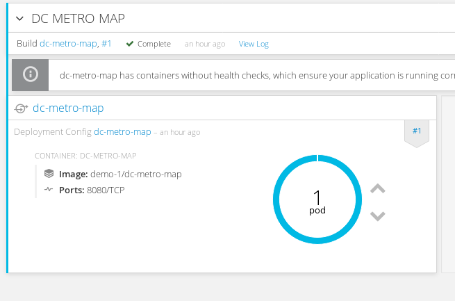
Within the deployment for the dc-metro-map is a container summary that shows both the GUID for the image and the GUID for the git branch. 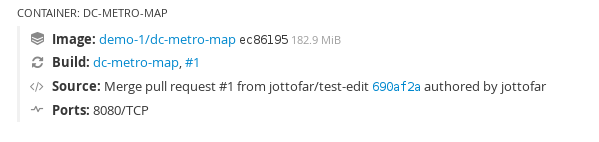
Click on the link next to "Image:"Here are the details of the image stream for this deployment.
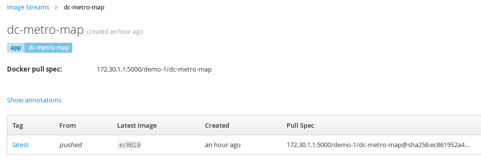
If you hover over the shortened image GUID or edit the image stream you can see the full GUID.
Click "Builds" and then Builds to get back to the build summary
Click "#1" to see the build detailsBecause we built this app using S2I, we get to see the details about the build - including the container image that was used for building the source code. Note that you can kick-off a rebuild here if something went wrong with the initial build and you'd like to attempt it again.
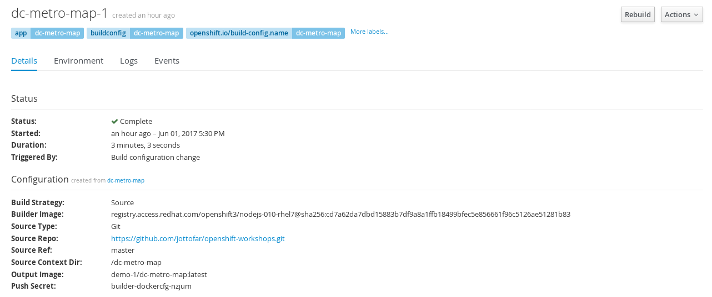
Click "Overview" and then the deployment detail link to get back to the deployment summary again
Notice in the Source line you can see the comment from the last commit when the build was started. And you can see the that commit's author. You can click that commit GUID to be taken to the exact version of the source code that is in this deployed application.
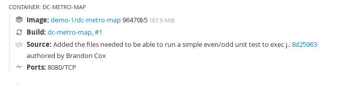
Pod logs
In the S2I lab we looked at a build log to inspect the process of turning source code into an image. Now let's inspect the log for a running pod - in particular let's see the web application's logs.
Goto the terminal and type the following:
$ oc get pods
This is going to show basic details for all pods in this project (including the builders). Let's look at the log for the pod running our application. Look for the POD NAME that that is "Running" you will use it below.
Goto the terminal and type the following (replacing the POD ID with your pod's ID):
$ oc logs [POD NAME]
You will see in the output details of your app starting up and any status messages it has reported since it started.
You can see more details about the pod itself with 'oc describe pod/'
Click on "Applications" and then click on "Pods"This is going to show basic details for all pods in this project (including the builders).
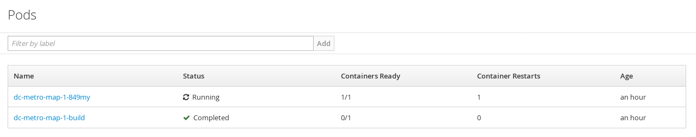
Next let's look at the log for the pod running our application.
Click the pod that starts with "dc-metro-map-" and has a status of Running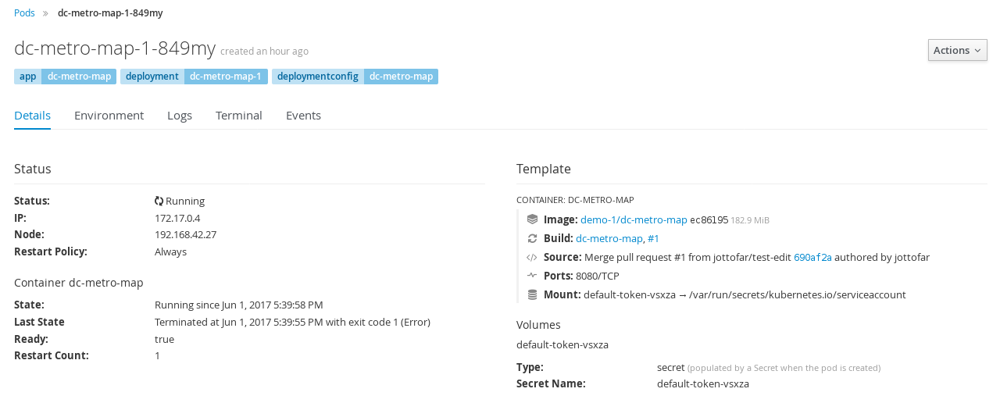
Here you see the status details of your pod as well as its configuration. Take a minute here and look at what details are available.
Click the "Logs" button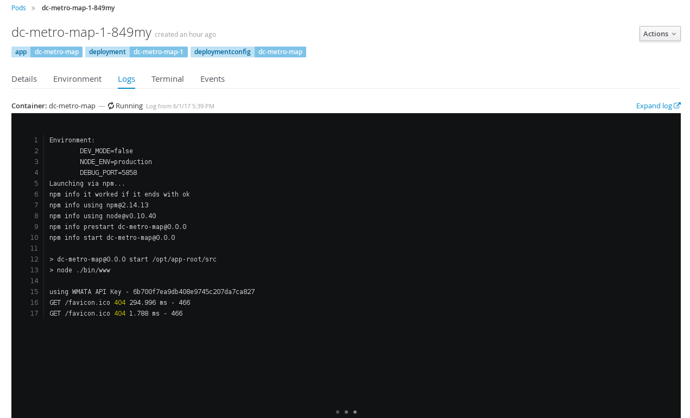
Now you can see in the output window the details of your app starting up and any status messages it has reported since it started.
How about we set some environment variables?
Whether it's a database name or a configuration variable, most applications make use of environment variables. It's best not to bake these into your containers because they do change and you don't want to rebuild an image just to change an environment variable. Good news! You don't have to. OpenShift let's you specify environment variables in your deployment configuration and they get passed along through the pod to the container. Let's try doing that.
Let's have a little fun. The app has some easter eggs that get triggered when certain env vars are set to 'true'.
Goto the terminal and type the following:
$ oc env dc/dc-metro-map -e BEERME=true
$ oc get pods -w
Due to the deployment config strategy being set to "Rolling" and the "ConfigChange" trigger being set, OpenShift auto deployed a new pod as soon as you updated with the env variable. If you were quick enough you saw this happening with the get pods command
Type Ctrl+C to stop watching the pods
You can set env variables across all deployment configs with 'dc --all' instead of specifying a specifc config
Click on "Applications" and then click on "Deployments"This is going to show basic details for all deployment configurations in this project
Click the "dc-metro-map" deployment configThere are a lot of details here, feel free to check them out and ask questions, but we are here to set some new environment variables.
Click the Environment tab next to the Details tab .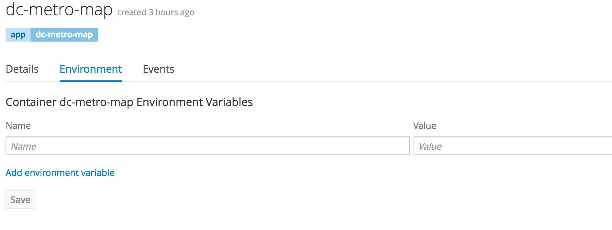
This opens up a tab with the environment variables for this deployment config.
Add an environment variable with the name BEERME and a value of 'true'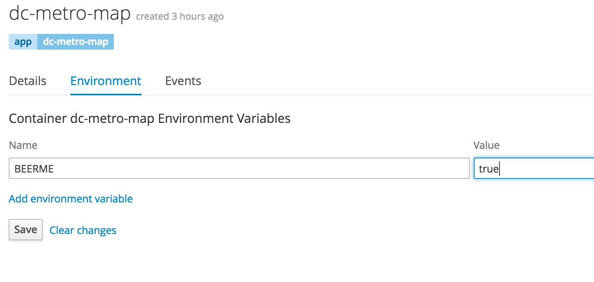
Click "Save". And go back to the summary view by clicking "Overview" on the left menu barIf you are quick enough you will see a new pod spin up and an the old pod spin down. This is due to the deployment config strategy being set to "Rolling" and having a "ConfigChange" trigger, OpenShift auto deployed a new pod as soon as you updated with the env variable.
With the new environment variables set the app should look like this in your web browser (with beers instead of busses):

What about passwords and private keys?
Environment variables are great, but sometimes we don't want sensitive data exposed in the environment. We will get into using secrets later when you do the lab: Keep it Secret, Keep it Safe
Getting into a pod
There are situations when you might want to jump into a running pod, and OpenShift lets you do that pretty easily. We set some environment variables and secrets in this lab, let's jump onto our pod to inspect them.
Goto the terminal and type the following:
$ oc get pods
Find the pod name for your Running pod
$ oc exec -it [POD NAME] /bin/bash
You are now interactively attached to the container in your pod. Let's look for the environment variables we set:
$ env | grep BEER
That should return the BEERME=true matching the value that we set in the deployment config.
$ exit
Click on "Applications" and then click on "Pods"
Click the pod that starts with "dc-metro-map-" and has a status of Running
Click the "Terminal" button
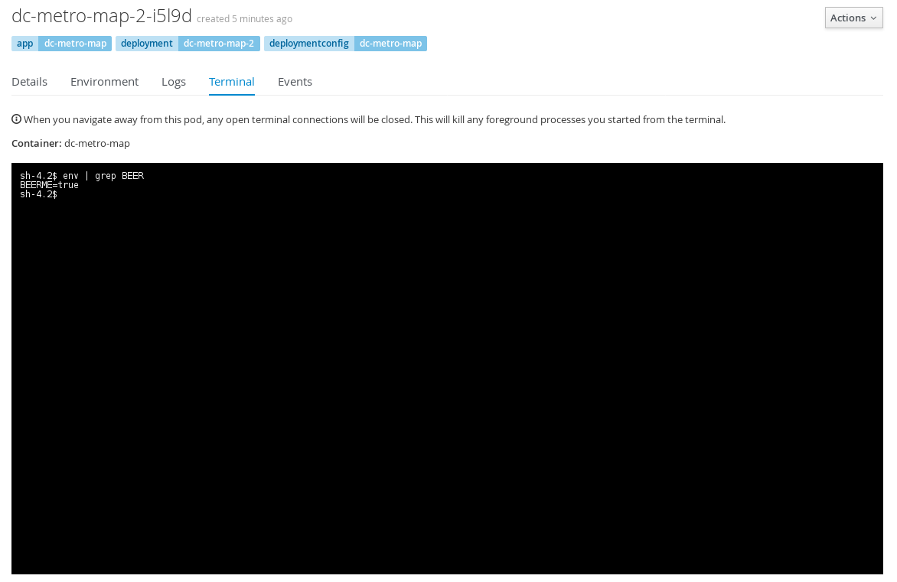
Let's look for the environment variables we set:
Inside the web page's terminal type: 'env | grep BEER'That should return the BEERME=true matching the value that we set in the deployment config.
Good work, let's clean this up
Let's clean up all this to get ready for the next lab:
$ oc delete all -l app=dc-metro-map
Summary
In this lab you've seen how to trace running software back to its roots, how to see details on the pods running your software, how to update deployment configurations, how to inspect logs files, how to set environment variables consistently across your environment, and how to interactively attach to running containers. All these things should come in handy for any developer working in an OpenShift platform.
To dig deeper in to details behind the steps you performed in this lab, check out the OpenShift developer's guide.